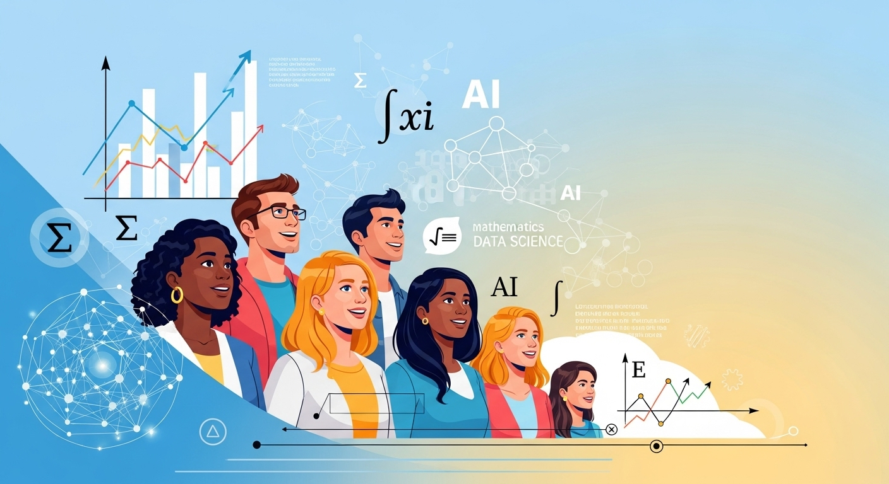
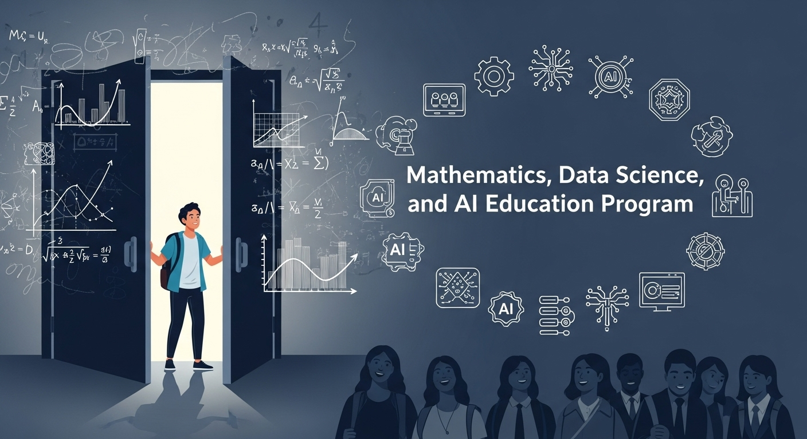
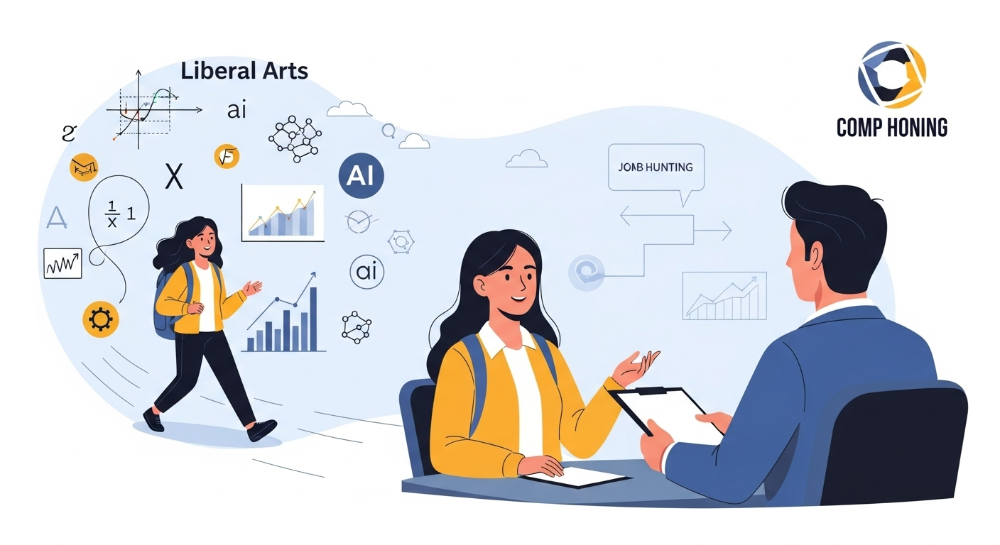
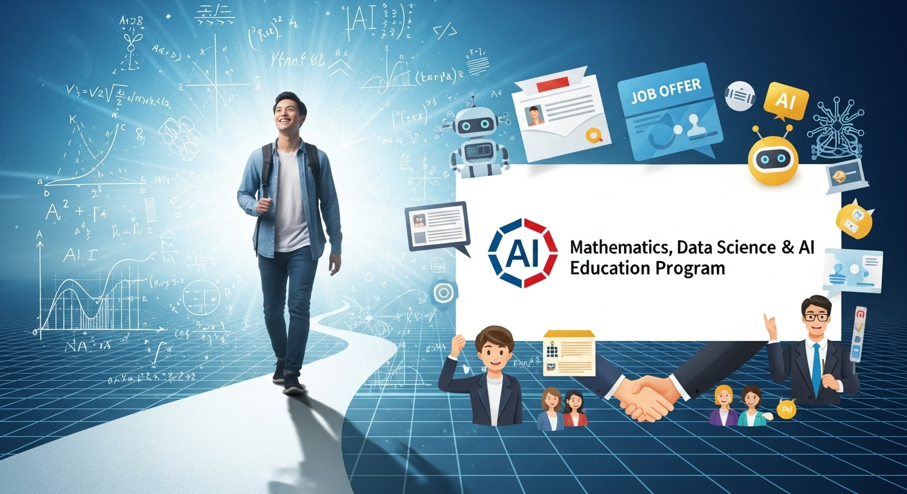

文系でも就活有利に！数理・データサイエンス・AI教育プログラムの全貌
導入

「就職活動、何から始めたらいいんだろう…」
「自分の専門分野だけで、これからの社会で戦っていけるのかな？」
大学生活も後半に差し掛かり、キャリアについて考え始めると、こんな不安が頭をよぎる文系の学生さんは少なくないかもしれません。周りの友人たちがインターンシップやOB・OG訪問に励む姿を見て、焦りを感じることもあるでしょう。特に、ニュースや新聞で「AI時代」「DX（デジタルトランスフォーメーション）」といった言葉を耳にするたび、「自分は文系だから、そうした最先端の分野とは縁がない」と、どこか他人事のように感じてしまってはいないでしょうか。
しかし、もしその「文系だから関係ない」という思い込みが、あなたの大きな可能性に蓋をしてしまっているとしたら、非常にもったいないことです。実は今、社会のあらゆる場面で「データ」を読み解き、活用できる人材の価値が、文理の垣根を越えて急速に高まっています。そして、そのスキルを身につけた文系学生こそが、これからの就職活動において、他の学生にはないユニークな強みを発揮できる存在として、企業から熱い視線を注がれているのです。
その大きなチャンスを掴むための強力なパスポートとなるのが、今回ご紹介する「数理・データサイエンス・AI教育プログラム」です。これは、文部科学省が中心となって推進している、全国の大学で受講可能な教育プログラムで、文系・理系を問わず、全ての学生がこれからのデジタル社会を生き抜くための基礎知識とスキルを習得することを目的としています。
「数学は高校以来、触れてもいないし、プログラミングなんて全く分からない…」
そんなふうに感じた方も、どうか心配しないでください。この記事では、そんな文系学生の皆さんのために、このプログラムが一体どのようなもので、なぜ就職活動で有利になるのか、そして、苦手意識を克服しながら学ぶための具体的な方法から、修了後のキャリア戦略まで、一つひとつ丁寧に、そして分かりやすく解説していきます。
この記事を読み終える頃には、あなたの就職活動に対する視野はぐっと広がり、「自分にもできるかもしれない」「新しい挑戦をしてみたい」という前向きな気持ちが湧き上がってくるはずです。変化の激しい時代だからこそ、新しい学びはあなたを裏切りません。さあ、一緒に未来のキャリアを切り拓くための第一歩を踏み出しましょう。
「数理・DS・AI教育プログラム」とは？就活での位置づけ

就職活動の情報収集をしていると、時折「数理・データサイエンス・AI教育プログラム」という言葉を見かけるようになったかもしれません。しかし、具体的にどのような制度で、自分の就活にどう関係するのか、まだピンと来ていない方も多いのではないでしょうか。この章では、まずこのプログラムの全体像を掴み、現代の就職活動において、それがどのような「価値」を持つのかを明らかにしていきましょう。一見すると難しそうに聞こえるかもしれませんが、その本質は、これからの社会で活躍するための新しい「教養」を身につけることにあります。
１．文科省認定プログラムの概要と種類
まず、「数理・データサイエンス・AI教育プログラム」が、単なる大学の一授業ではないということを理解することが重要です。これは、国が主導する一大プロジェクトであり、その背景には、社会の大きな変化があります。
プログラムが生まれた背景：Society 5.0という未来
皆さんは「Society 5.0（ソサエティ5.0）」という言葉を聞いたことがあるでしょうか。これは、日本政府が提唱する未来社会のコンセプトで、サイバー空間（仮想空間）とフィジカル空間（現実空間）を高度に融合させたシステムにより、経済発展と社会的課題の解決を両立する、人間中心の社会を目指すものです。少し難しく聞こえるかもしれませんが、簡単に言えば、AIやIoT（モノのインターネット）といった最新技術をあらゆる産業や社会生活に取り入れ、一人ひとりが快適で質の高い生活を送れる社会を作ろう、というビジョンです。
このSociety 5.0を実現するためには、分野を問わず、あらゆる人々がAIやデータの恩恵を理解し、それを活用できる能力を持つことが不可欠です。そこで文部科学省は、将来の社会を担う全ての大学・高専生が、いわば「デジタル社会の『読み・書き・そろばん』」とも言える数理・データサイエンス・AIの基礎的な素養を身につけられるよう、大学における教育体制の整備を後押しするために「数理・データサイエンス・AI教育プログラム認定制度」を創設しました。
文部科学省が「認定」することの意味
この制度の最大の特徴は、各大学が提供する教育プログラムの内容を、国（文部科学省）が審査し、「一定のレベルを満たしている」とお墨付きを与える点にあります。つまり、この認定を受けているプログラムは、教育の質が客観的に担保されていることを意味します。就職活動において、履歴書や面接で「文部科学省認定の数理・データサイエンス・AI教育プログラムを修了しました」と伝えることは、単に「データ分析の授業を取りました」と言うよりも、はるかに高い信頼性と説得力を持つことになります。企業側も、「この学生は、国が定めた基準を満たす体系的な教育を受けてきたのだな」と評価してくれるわけです。
プログラムの主な種類
この認定制度には、目標とするレベルに応じて、主に2つのレベルが設定されています。
- リテラシーレベル: 文理を問わず、全ての学生を対象とした入門・初級レベルです。AIやデータが社会でどのように使われているかを理解し、その恩恵やリスクを考えながら、適切に活用できる基礎的な能力（リテラシー）を養うことを目的としています。
- 応用基礎レベル: リテラシーレベルの内容に加え、学生が自身の専門分野（経済学、社会学、心理学など）に、数理・データサイエンス・AIの知識や技術を応用し、具体的な課題解決に繋げるための実践的な能力を育成することを目的としています。
どちらのレベルを選ぶべきかについては、後の章で詳しく解説しますが、まずは国が本腰を入れて、質の高いデータサイエンス教育を全国の大学に広げようとしている、という大きな流れを掴んでおくことが大切です。
２．なぜデータサイエンス・AIスキルが就活で求められるのか
では、なぜ今、企業はこれほどまでにデータサイエンスやAIのスキルを持つ人材を求めているのでしょうか。それは、ビジネスの世界で起きている根本的な変化と深く関係しています。文系学生の皆さんにとっても、決して他人事ではありません。
あらゆる企業が「DX（デジタルトランスフォーメーション）」の真っ只中
DX（デジタルトランスフォーメーション）とは、簡単に言えば「デジタル技術を使って、ビジネスや生活をより良いものに変革していくこと」です。そして、その変革の中核を担うのが「データ」です。
かつてのビジネスは、経営者やベテラン社員の「経験」や「勘」に頼って意思決定が行われる場面が多くありました。しかし、現代では、顧客の購買履歴、ウェブサイトの閲覧データ、SNSでの評判、市場の動向など、膨大なデータを収集し、分析することが可能になっています。企業は、これらのデータを活用して、より客観的で精度の高い意思決定、いわゆる「データドリブン経営」へと舵を切っているのです。
- マーケティング部門では、顧客データを分析して、一人ひとりに合った商品をおすすめする。
- 営業部門では、過去の成約データを分析して、次にアプローチすべき顧客リストを作成する。
- 人事部門では、社員の満足度調査データを分析して、より働きやすい職場環境を整える。
- 経営企画部門では、市場データを分析して、将来性のある新規事業を立案する。
このように、今や職種を問わず、あらゆるビジネスシーンでデータ活用の視点が不可欠となっています。企業は、ただ言われたことをこなすだけでなく、「このデータから何が言えるだろう？」「どうすればもっと良くなるだろう？」と、データに基づいて自ら考え、提案できる人材を喉から手が出るほど欲しがっているのです。
文系人材にこそ寄せられる大きな期待
ここで重要なのは、企業が求めているのは、必ずしも高度なプログラミングができる理系の専門家だけではない、という点です。むしろ、データサイエンスのスキルを持つ「文系人材」に大きな期待が寄せられています。
なぜなら、ビジネスの課題解決は、データ分析だけで完結するわけではないからです。
- 課題発見・設定: そもそも「どんなデータを分析すれば、ビジネス上の課題を解決できるのか？」という問いを立てる力。これには、社会の動向や人々の心理、文化的な背景を理解する、文系的な素養が非常に役立ちます。
- 分析結果の解釈: 分析によって得られた数字やグラフが、具体的に「何を意味するのか」をビジネスの文脈に落とし込んで解釈する力。
- ストーリーテリング・提案: その解釈を元に、専門家でない人にも分かりやすく説明し、「だから、私たちは次にこうすべきだ」という具体的なアクションプランを提案し、人々を動かす力。
これらの能力は、これまで文系の学問で培われてきた、論理的思考力、批判的思考力、コミュニケーション能力、文章構成力などがダイレクトに活かせる領域です。つまり、「データ分析という理系的なアプローチ」と、「課題設定や解釈・提案という文系的なアプローチ」を高いレベルで融合できる人材こそが、これからのビジネスで最も価値を発揮するのです。
このプログラムでデータサイエンスの素養を身につけた文系学生は、まさにこの「ハイブリッド人材」としてのポテンシャルを秘めており、就職活動において非常に魅力的な存在として映るのです。
３．認定制度の種類とそれぞれの特徴
それでは、先ほど少し触れた認定制度の2つのレベル、「リテラシーレベル」と「応用基礎レベル」について、もう少し詳しく見ていきましょう。どちらが自分に合っているかを考える上で、それぞれの目標と学習内容を理解しておくことが大切です。
① リテラシーレベル：全社会人のための「新しい教養」
- 対象者: 文学部、法学部、経済学部、教育学部など、文理を問わず、大学・高専に在籍する全ての学生。
- 目標: AIやデータサイエンスが社会でどのように活用され、私たちの生活にどのような影響を与えているのかを正しく理解し、それらを「賢く」利用するための基礎的な知識（リテラシー）を身につけること。専門家になることではなく、市民として、また一人のビジネスパーソンとして、データやAIと適切に関わっていくための土台作りを目指します。
- 学習内容のイメージ:
- データサイエンス入門: データとは何か、統計学の基本的な考え方（平均、分散など）、データをグラフで分かりやすく表現する方法。
- AIの基礎: AIの歴史、機械学習やディープラーニングの簡単な仕組み、身の回りにあるAIの活用事例（画像認識、音声アシスタントなど）。
- 社会との関わり: データやAIを活用する上での倫理的な問題（個人情報保護、プライバシー）、フェイクニュースの見分け方、情報セキュリティの重要性。
- ツールの体験: Excelのピボットテーブルや簡単な統計関数を使って、実際にデータを触ってみる体験など。
- 就活での位置づけ:
リテラシーレベルの修了は、「私は現代社会の必須教養であるデータリテラシーを体系的に学んでおり、データに基づいた客観的な視点を持つことができます」というアピールになります。特定の専門職を目指すためのスキル証明というよりは、あらゆる職種で求められる基礎的なビジネススキルと論理的思考力を備えていることの証明として機能します。営業職、事務職、販売職など、直接データ分析を行わない職種を志望する場合でも、この素養は間違いなくプラスに評価されるでしょう。
② 応用基礎レベル：専門分野を深化させる「強力な武器」
- 対象者: リテラシーレベルの知識を前提として、さらに一歩踏み込み、自らの専門分野における課題解決にデータサイエンス・AIを応用したいと考える、意欲のある学生。
- 目標: 自分の専門分野（例えば、経済学、社会学、心理学など）の知識と、データサイエンスの技術を掛け合わせ、実践的な課題解決ができる能力を身につけること。
- 学習内容のイメージ:
- より進んだ統計学: 推測統計、仮説検定、回帰分析など、より高度なデータ分析手法。
- プログラミング基礎: データ分析で広く使われているプログラミング言語であるPythonやRの基本的な文法、ライブラリ（データ分析を簡単にしてくれる道具箱のようなもの）の使い方。
- 機械学習の基礎: 教師あり学習、教師なし学習といった、AIの中核技術である機械学習のアルゴリズムの概念を学び、実際に簡単なモデルを作成してみる。
- PBL（Project Based Learning）: これが応用基礎レベルの核となります。自分の専門分野に関連する現実的なテーマ（例：「SNSのデータから若者の消費トレンドを分析する」「過去の判例データを分析し、裁判の傾向を予測する」など）を設定し、チームでデータを収集・分析し、最終的な成果を発表する、といった課題解決型の学習を行います。
- 就活での位置づけ:
応用基礎レベルの修了は、より専門的で強力なアピール材料となります。「私は〇〇（専門分野）の知識に加え、Pythonを用いてデータ分析を行い、具体的な課題解決を実践した経験があります」と語ることができれば、企業側はあなたを「即戦力に近いポテンシャルを持つ人材」として評価するでしょう。マーケティングリサーチャー、データアナリスト、経営企画、コンサルタントなど、データ活用が業務の根幹をなす職種への道が大きく開かれます。
さらに、応用基礎レベルの中でも特に優れた教育内容を提供していると認められたプログラムは、「MDASH-Plus」という、いわば「ゴールド認定」のような位置づけになります。もし在籍する大学のプログラムがこのPlus認定を受けていれば、それはさらに強力なアピールポイントとなるでしょう。
文系学生が「数理・DS・AI教育プログラム」を学ぶメリット
ここまでプログラムの概要について見てきましたが、ここからは、特に「文系学生」の皆さんがこのプログラムを学ぶことで、具体的にどのような素晴らしいメリットを得られるのか、キャリアの視点からさらに深掘りしていきましょう。それは単に「就活で有利になる」という一言では片付けられない、あなたの未来の可能性を大きく広げるものばかりです。
メリット１．専門分野との掛け合わせでキャリアの選択肢が広がる
文系学生がこのプログラムを学ぶ最大のメリットは、自分の専門分野という「軸」を持ちながら、データサイエンスという「新しい武器」を手に入れられる点にあります。この「掛け合わせ」こそが、あなたを唯一無二の希少な人材へと押し上げてくれるのです。
「専門知識」×「データサイエンス」が生み出す圧倒的な価値
データサイエンスは、それ単体で存在する魔法の杖ではありません。何らかの「領域知識（ドメイン知識）」、つまり特定の分野に関する深い知見があって初めて、その真価を発揮します。例えば、ただプログラミングができて統計モデルを作れるだけの人よりも、「マーケティングの理論を熟知した上で、顧客データを分析できる人」の方が、企業にとってはるかに価値が高いのです。
文系の皆さんは、すでに大学の授業を通じて、それぞれの専門分野の知識を深めているはずです。その知識とデータサイエンスを掛け合わせることで、どのようなキャリアの可能性が広がるのか、具体的な例を見てみましょう。
- 経済学部・商学部 × データサイエンス
- キャリア例: 金融機関のアナリスト、証券会社のクオンツ、マーケティングリサーチャー、ECサイトのデータ分析担当
- できること: 経済指標のデータから将来の景気動向を予測する。株価の変動パターンを分析して投資モデルを構築する。消費者の購買データから新たなヒット商品の種を見つけ出す。
- 社会学部・人間科学部 × データサイエンス
- キャリア例: 広告代理店のプランナー、シンクタンクの研究員、NPO/NGOの職員、自治体の政策立案担当
- できること: SNSの投稿データを分析して世論の動向を掴む（ソーシャルリスニング）。アンケート調査の結果を統計的に分析し、現代社会が抱える課題を浮き彫りにする。犯罪発生データと地理情報を組み合わせて、効果的な防犯対策を立案する。
- 文学部・歴史学部 × データサイエンス
- キャリア例: 出版社の編集者・マーケター、図書館司書、デジタルアーカイブ担当、ゲームのシナリオライター
- できること: 過去の文学作品を大量にテキストマイニング（文章のデータ分析）し、時代ごとの文体の変遷や作家の個性を可視化する。電子書籍の販売データを分析し、読者の好みに合わせた書籍を企画・推薦する。歴史的な文献をデジタル化し、検索・分析しやすいデータベースを構築する。
- 法学部・政治学部 × データサイエンス
- キャリア例: 法律事務所のリーガルテック担当、コンサルティングファーム、企業の法務・知財部、選挙コンサルタント
- できること: 膨大な量の過去の判例データを分析し、特定の争点における裁判所の判断傾向を予測する。企業の契約書データを分析し、潜在的なリスクを自動で検出するシステムを考案する。選挙の投票データを分析し、効果的な選挙戦略を立案する。
- 心理学部 × データサイエンス
- キャリア例: IT企業のUX（ユーザーエクスペリエンス）リサーチャー、人材企業のデータアナリスト、広告代理店の消費者インサイト担当
- できること: アプリの利用ログデータを分析し、ユーザーがどこでつまずいているのか、どうすればもっと快適に使えるかを心理学の知見から提案する。社員の適性検査データを分析し、ハイパフォーマーに共通する特性を見つけ出し、採用や人材育成に活かす。
いかがでしょうか。これらはほんの一例に過ぎません。これまで「文系の就職先」としてイメージされてきた業界・職種だけでなく、IT業界や製造業、コンサルティング業界など、活躍のフィールドが劇的に広がることがお分かりいただけると思います。あなたは、単なるデータサイエンティストではなく、「経済学に強いデータ活用人材」「心理学の知見を持つUXの専門家」といった、独自の肩書きを持つことができるのです。
メリット２．論理的思考力とデータ活用スキルで企業から評価される
企業が採用活動において最も重視する能力の一つに「論理的思考力（ロジカルシンキング）」があります。これは、物事を体系的に整理し、筋道を立てて考える力のことです。なぜなら、ビジネスの世界は、日々発生する様々な問題に対して、その原因を特定し、解決策を考え、実行していくプロセスの連続だからです。
データサイエンスを学ぶ過程は、まさにこの論理的思考力を実践的に鍛える絶好のトレーニングとなります。
データ分析のプロセスが論理的思考を育む
データ分析は、以下のようなステップで進められます。
- 課題設定: 何を明らかにするために、データを分析するのか？（目的の明確化）
- 仮説立案: おそらく、〇〇という原因で、△△という結果になっているのではないか？（仮の答えを立てる）
- データ収集・加工: 仮説を検証するために、必要なデータを集め、分析しやすい形に整える。
- 分析・可視化: 統計的な手法やツールを用いてデータを分析し、グラフなどで分かりやすく表現する。
- 考察・結論: 分析結果から何が言えるのかを解釈し、最初の仮説が正しかったのかを検証する。
- アクション提案: 結論に基づき、次に何をすべきかを具体的に提案する。
この一連の流れは、まさに論理的思考そのものです。このプロセスを繰り返し訓練することで、あなたは自然と、感情や思い込みに流されず、客観的な事実（データ）に基づいて物事を判断し、説明する能力を身につけることができます。
「なんとなく」から「データに基づくと」へ
このスキルは、就職活動の面接やグループディスカッションの場でも、絶大な効果を発揮します。
例えば、「学生時代に力を入れたことは何ですか？」という定番の質問に対して、
- Aさんの回答: 「カフェのアルバイトで、売上を上げるために頑張りました。新しいメニューを提案したり、接客を丁寧にしたりした結果、少し売上が上がったと思います。」
- Bさんの回答（DSプログラム履修者）: 「カフェのアルバイトで、売上向上に取り組みました。まず、過去1年間のPOSデータを分析したところ、平日の午後3時以降に来店客数が落ち込む傾向があることを発見しました。そこで、『この時間帯の顧客単価を上げることが売上向上の鍵だ』という仮説を立て、ケーキとドリンクのセット割引を提案・実行しました。結果、施策実行後1ヶ月で、当該時間帯の客単価が15%向上し、店舗全体の月間売上も5%増加させることができました。」
どちらの回答がより説得力があり、ビジネスパーソンとしてのポテンシャルを感じさせるかは一目瞭然でしょう。Bさんの回答は、課題発見から仮説検証、具体的な行動、そして定量的な結果までが、データという客観的な根拠によって裏付けられています。
このように、データ活用スキルは、あなたの発言一つひとつに「説得力」と「再現性」を与えてくれます。企業は、「この学生は、入社後も感覚ではなく、きちんと事実に基づいて仕事を進めてくれそうだ」と高く評価してくれるのです。こうした論理的思考力やデータ活用スキルは、特定の業界でしか通用しない専門スキルとは異なり、どんな会社、どんな職種に就いても一生役立つ「ポータブルスキル（持ち運び可能なスキル）」であることも、大きな魅力と言えるでしょう。
メリット３．将来性あるAI・DS分野への就職が可能に
現代社会において、AI・データサイエンス市場が今後も拡大を続ける成長分野であることは、多くの人が認めるところです。このプログラムを学ぶことは、そうした将来性豊かな分野へキャリアの扉を開くことに直結します。
多様化するデータ関連職種
「AI・DS分野への就職」と聞くと、多くの文系学生は「自分にはなれない、理系の専門職でしょう？」と思ってしまうかもしれません。確かに、AIのアルゴリズムを開発する「AIエンジニア」や、高度な統計モデルを構築する「データサイエンティスト」といった職種は、理系の大学院で専門的な研究を積んだ人材が中心となることが多いのは事実です。
しかし、データとAIがビジネスのあらゆる側面に浸透するにつれて、求められる職種も多様化しています。文系学生の素養が存分に活かせるポジションも数多く生まれているのです。
- データアナリスト: ビジネス上の課題に対し、データを収集・分析し、その結果から改善策や新たな施策に繋がる「示唆（インサイト）」を見つけ出す専門家。技術力以上に、ビジネスへの深い理解と課題発見能力が求められます。
- AIプランナー／プロダクトマネージャー: 「AIを使ってどんな新しいサービスや製品を作れるか？」を企画・立案し、エンジニアやデザイナーと協力しながらプロジェクトを推進する役割。市場のニーズを読み解き、技術の可能性とビジネスを結びつける構想力が重要です。
- データコンサルタント: クライアント企業が抱える経営課題に対し、データ活用の観点から解決策を提案する仕事。高い論理的思考力とコミュニケーション能力が不可欠です。
- マーケティングリサーチャー: 市場調査や消費者行動データを分析し、マーケティング戦略の立案を支援します。人々の心理や社会のトレンドを読み解く力が活かせます。
これらの職種は、技術的な側面とビジネス的な側面の両方を理解していることが求められるため、応用基礎レベルのプログラムで実践的な学びを積んだ文系学生にとって、非常に有望なキャリアパスと言えます。
成長市場でキャリアを築くということ
成長市場に身を置くことには、大きなメリットがあります。市場が拡大しているため、新たなポジションが生まれやすく、キャリアアップの機会も豊富です。また、常に新しい技術や手法が登場するため、学び続けることで自らの専門性を高め、市場価値の高い人材へと成長していくことができます。それは、長期的に見て、安定したキャリアを築く上で非常に有利に働きます。
もちろん、いきなり専門職に就くことだけが道ではありません。最初は総合職として入社し、営業や企画の部署で働きながら、データ分析スキルを活かして頭角を現し、社内のデータ戦略部門へ異動する、といったキャリアパスも十分に考えられます。
このプログラムで得られる知識とスキルは、あなたを将来性の高いフィールドへと導く、まさに「未来への切符」となる可能性を秘めているのです。
「数理・DS・AI教育プログラム」のデメリットと注意点
ここまで、このプログラムが持つ輝かしいメリットについてお話ししてきましたが、物事には必ず光と影があります。新しい挑戦には、困難がつきものです。ここでは、特に文系学生の皆さんが直面する可能性のあるデメリットや注意点について、正直にお伝えしたいと思います。しかし、どうかここで怖気づかないでください。事前に課題を正しく認識し、適切な対策を立てておくことこそが、挫折せずに目標を達成するための最も賢明なアプローチなのです。
デメリット１．文系学生が直面する学習の壁と克服法
文系学生にとって、最大のハードルは、やはり数学やプログラミングといった、これまであまり馴染みのなかった分野の学習でしょう。具体的な「壁」と、それを乗り越えるためのヒントをいくつかご紹介します。
壁①：数学・統計学への苦手意識
「高校で数学ⅡBをやって以来、全く触れていない…」「そもそも数字を見るのが苦手…」という方は少なくないはずです。データサイエンスの根幹には、確率・統計学があり、その背景には微分積分や線形代数といった数学の知識が潜んでいます。授業で突然、Σ（シグマ）や∫（インテグラル）といった記号が出てきて、頭が真っ白になってしまう、という場面も想像に難くありません。
- 克服法１：目的意識を持つ
なぜ数学を学ぶのか、その目的を常に意識することが大切です。例えば、「この統計手法（t検定）は、新商品のAとB、どちらが本当に売れているかを客観的に判断するために使うんだ」というように、具体的なデータ分析の場面と結びつけることで、無味乾燥な数式が、意味のある「道具」として見えてきます。数学そのものを極めるのではなく、データ分析という目的を達成するためのツールとして捉えましょう。 - 克服法２：良質な教材を活用する
幸いなことに、現代では数学に苦手意識を持つ人向けの優れた教材が豊富にあります。大学が提供する補習授業やリメディアル教育の機会があれば、積極的に活用しましょう。また、オンライン学習プラットフォーム（Udemy, Courseraなど）やYouTubeには、「文系のための統計学入門」といった、図や例え話を多用した分かりやすい講座がたくさんあります。書籍であれば、『完全独習 統計学入門』や『マンガでわかる統計学』など、初学者向けのベストセラーから手に取ってみるのがおすすめです。 - 克服法３：完璧を目指さない
最初から全ての数式を完璧に証明しようとする必要はありません。まずは「この手法を使うと、何が分かるのか」「どんな時に使うのか」というコンセプトを理解することから始めましょう。多くの分析は、Pythonのライブラリや統計ソフトが自動で計算してくれます。まずはツールの使い方をマスターし、必要に応じて理論的な背景を学び直す、というアプローチも有効です。
壁②：プログラミングの「エラーの壁」
応用基礎レベルのプログラムでは、PythonやRといったプログラミング言語を学ぶ機会が多くあります。プログラミング初学者が必ず直面するのが、「エラー」との戦いです。たった一文字の打ち間違い、カッコの閉じ忘れ、インデント（字下げ）のズレなど、些細なミスでプログラムは全く動いてくれません。真っ赤なエラーメッセージが画面に並ぶと、心が折れそうになることもあるでしょう。
- 克服法１：エラーメッセージを「読む」習慣をつける
エラーメッセージは、敵ではなく「ヒントをくれる味方」です。最初は英語で書かれているため敬遠しがちですが、よく読むと「〇〇という名前の変数が定義されていません」「△行目で文法が間違っています」など、原因を具体的に教えてくれています。メッセージをコピーしてGoogleで検索すれば、同じエラーで悩んだ先人たちの解決策がすぐに見つかります。この「エラーを読んで、検索して、解決する」というサイクルこそが、プログラミング能力を最も成長させてくれます。 - 克服法２：仲間と学ぶ
一人でパソコンに向かっていると、簡単なエラーでも解決できずに何時間もハマってしまうことがあります。そんな時、一緒に学ぶ仲間がいれば、「ここ、どうやってる？」と気軽に聞き合えます。他人のコードを見ることで新たな発見もありますし、人に教えることで自分の理解も深まります。大学の授業でグループを組んだり、学内のプログラミングサークルに参加したりして、共に学ぶ環境に身を置くことが、挫折を防ぐ大きな助けとなります。 - 克服法３：小さな成功体験を積み重ねる
いきなり複雑なデータ分析に挑戦するのではなく、まずは「1から10までの数字を表示する」「簡単なグラフを描画する」といった、小さな目標を一つひとつクリアしていくことが大切です。ProgateやPaizaといった、ゲーム感覚で学べるオンラインサービスは、この「小さな成功体験」を積み重ねやすいように設計されています。動くものが作れる喜びを味わいながら、少しずつステップアップしていきましょう。
デメリット２．履修にかかる時間と労力の確保術
文系学生の皆さんは、当然ながら、ご自身の専門分野の授業やゼミ、卒業論文といった、本来の学業があります。それに加えて、このプログラムを履修するとなると、時間的、精神的な負担が大きくなることは避けられません。サークル活動やアルバイト、友人との時間も大切にしたい中で、どのように学習時間を確保すれば良いのでしょうか。
課題：専門科目＋αの学習負担
特に応用基礎レベルのプログラムは、演習やレポート、グループでのプロジェクトなど、授業時間外での学習を多く必要とします。専門科目の期末試験やレポートの時期と重なると、キャパシティオーバーになってしまう可能性も十分に考えられます。
- 確保術１：戦略的な履修計画を立てる
時間管理の鍵は、計画にあります。大学1、2年生の、比較的時間が取りやすい時期から、計画的にプログラム関連の科目を履修していくことを強くおすすめします。3、4年生になってから慌てて履修しようとすると、専門のゼミや就職活動と重なり、非常に苦しくなります。大学の履修要覧をよく読み、4年間（あるいは2年間）の全体像を見据えて、「どの学期にどの科目を履修するか」というロードマップを事前に描いておきましょう。 - 確保術２：タイムマネジメント術を身につける
「忙しい」を理由にしていては、何も成し遂げられません。自分に合った時間管理術を見つけ、実践することが重要です。- タスクの可視化: Google CalendarやTrello、Notionといったツールを使い、やるべきこと（To-Do）を全て書き出し、優先順位をつけましょう。頭の中だけで管理しようとすると、必ず何かを忘れます。
- ポモドーロ・テクニック: 「25分集中して、5分休憩する」というサイクルを繰り返す時間管理術です。人間の集中力は長くは続きません。短時間集中を繰り返すことで、効率的に学習を進めることができます。
- スキマ時間の活用: 通学中の電車の中、授業間の空きコマなど、日常に潜む「スキマ時間」を有効活用しましょう。スマートフォンでプログラミングの解説動画を見たり、統計学の単語帳アプリで復習したりと、5分、10分でもできることはたくさんあります。
- 確保術３：完璧主義を手放す
全ての科目で100点を目指そうとすると、心身ともに疲弊してしまいます。時には「この科目は単位が取れれば良い」「この課題は8割の完成度で提出しよう」といった、良い意味での「手抜き」も必要です。自分のリソースには限りがあることを認識し、何に重点的に時間と労力を投入するか、戦略的に判断する能力も、社会に出てから役立つ重要なスキルです。
デメリット３．プログラム修了後の継続学習の重要性
最後に、これはデメリットというよりは、この分野でキャリアを築いていく上での「心構え」に近いかもしれません。それは、AI・データサイエンスの世界は、技術の進歩が非常に速く、「一度学んだらおしまい」ではない、ということです。
課題：技術の陳腐化と学び続ける必要性
大学のプログラムで学んだ特定のプログラミング言語のバージョンや、最新だと思っていた機械学習のモデルが、数年後には古いものになっている、ということが当たり前に起こる世界です。そのため、プログラムの修了はゴールではなく、あくまで自律的に学び続けるための「スタートライン」に立ったに過ぎない、と考える必要があります。この継続学習のマインドセットを持てるかどうかが、長期的なキャリアの成功を大きく左右します。
- 継続学習の方法１：情報収集の習慣化
日頃から、この分野の最新情報にアンテナを張っておくことが大切です。IT系のニュースサイト（TechCrunch, ITmediaなど）や、技術ブログ（Qiita, Zennなど）をブックマークし、毎日少しでも目を通す習慣をつけましょう。Twitterで有名なデータサイエンティストや研究者をフォローするのも、効率的な情報収集の方法です。 - 継続学習の方法２：実践の場に身を置く
知識は、使わなければ錆びついてしまいます。学んだスキルを維持・向上させるために、実践の機会を意識的に作りましょう。- Kaggle（カグル）: 世界中のデータサイエンティストが、企業から提供された課題データに対して分析モデルの精度を競い合うプラットフォームです。コンペに参加することで、実践的なデータ分析の経験を積むことができます。
- 個人プロジェクト: 自分の興味のあるテーマ（例えば、好きなスポーツの試合結果予測、自分のSNSのデータ分析など）で、個人的にデータ分析プロジェクトをやってみるのも良いでしょう。その成果をGitHubやブログで公開すれば、就職活動のポートフォリオにもなります。
- 継続学習の方法３：コミュニティに参加する
同じ志を持つ仲間との繋がりは、学習のモチベーションを維持する上で非常に重要です。社会人向けの勉強会や、特定の技術テーマに関するオンラインコミュニティに参加してみましょう。自分より経験豊富な人の話を聞いたり、自分の学びをアウトプットしたりすることで、新たな知識や視点を得ることができます。
これらの壁や課題は、決して楽な道のりではありません。しかし、それらを乗り越えた先には、他では得られない確かなスキルと自信、そして何より、自らの力で未来を切り拓いていく面白さが待っています。
自分に合った「数理・DS・AI教育プログラム」の選び方
さて、プログラムを学ぶメリットと、乗り越えるべき課題が見えてきたところで、次はいよいよ「では、具体的にどのプログラムを選べば良いのか？」という実践的なステップに進みましょう。プログラムの選択は、あなたの学習体験と、その後のキャリアに大きく影響します。自分自身の目標や学習スタイル、置かれた状況を冷静に分析し、最適な選択をするための具体的な視点を3つご紹介します。
選び方１．大学内外で受講可能なプログラムを比較
まず、受講できるプログラムは、必ずしも自分の大学内に限らないということを知っておきましょう。視野を広げ、様々な選択肢を比較検討することが、後悔しないプログラム選びの第一歩です。
① 自大学のプログラム：最も身近で現実的な選択肢
- 調べ方:
- まずは、所属する大学のウェブサイトで「データサイエンス」「AI教育」「プログラム」といったキーワードで検索してみましょう。多くの大学では、専用の特設サイトを設けています。
- 大学のシラバス検索システムや、教務課・学務課の窓口で問い合わせるのも確実です。入学時に配布された履修案内にも記載があるかもしれません。
- メリット:
- 履修の容易さ: 普段の授業と同じように、学内のシステムで簡単に履修登録ができます。
- 単位認定: プログラムの科目が、卒業要件の単位として認められる場合が多く、効率的に学習を進められます。
- アクセスの良さ: 同じキャンパス内の教員に直接質問に行ったり、TA（ティーチングアシスタント）のサポートを受けたりしやすい環境です。
- 仲間との学習: 同じ学部の友人や、他学部の学生と一緒に受講できるため、モチベーションを維持しやすく、協力して課題に取り組むことができます。
- 注意点:
- 大学によってプログラムの質や内容にばらつきがある可能性があります。後述する選び方のポイントを参考に、内容をしっかり吟味する必要があります。
② 他大学のプログラム：視野を広げる選択肢
- 調べ方:
- 近年、大学間の単位互換制度や、共同で教育プログラムを提供するコンソーシアム（連携組織）が増えています。例えば、首都圏の大学が連携する「首都圏大学コンソーシアム」や、地域ごとの大学連携の取り組みなどがあります。
- 文部科学省の「数理・データサイエンス・AI教育プログラム認定制度」のウェブサイトには、認定されたプログラムを持つ大学の一覧が掲載されています。そこから、近隣の大学や、オンラインで受講可能な他大学のプログラムがないか調べてみるのも良いでしょう。
- メリット:
- 自大学にはない、特色あるプログラム（特定の専門分野に特化している、著名な教員がいるなど）を受講できる可能性があります。
- 注意点:
- 履修手続きが複雑であったり、単位認定の可否を事前に確認する必要があったりします。移動時間や費用も考慮に入れる必要があります。
③ 学外のオンライン講座・ブートキャンプ：実践力特化の選択肢
- 調べ方:
- Udemy, Coursera, edXといった世界的なオンライン学習プラットフォーム（MOOCs）では、国内外の有名大学や企業が提供する質の高い講座を、比較的安価（または無料）で受講できます。
- Aidemy, TechAcademy, DMM WEBCAMPといった、プログラミングスクールが提供するデータサイエンス専門のコース（ブートキャンプ）もあります。
- メリット:
- 実践的・最新: 就職や転職に直結するような、より実践的なスキルや、最新の技術トレンドを学ぶことに特化している場合が多いです。
- 短期間集中: 数週間から数ヶ月といった短期間で、集中的にスキルを習得することができます。
- 柔軟な学習スタイル: オンラインなので、時間や場所を選ばずに自分のペースで学習を進められます。
- 注意点:
- 費用: プログラミングスクールは、数十万円単位の高い費用がかかる場合があります。
- 単位認定: 大学の単位としては認定されないケースがほとんどです。
- 自己管理能力: 独学に近いため、強い意志と自己管理能力が求められます。
比較のポイント:
まずは自大学のプログラムを基本線として検討し、「より専門的な内容を学びたい」「短期間で集中的にやりたい」といった目的があれば、学外の選択肢も視野に入れる、という順番で考えると良いでしょう。費用、期間、学習内容、得られるもの（単位、スキル、修了証など）を総合的に比較し、自分のライフスタイルや目標に最も合ったものを選びましょう。
選び方２．認定レベル（リテラシー・応用基礎）で選ぶポイント
次に、プログラムのレベルをどう選ぶか、という視点です。これは、あなたが「このプログラムを通じて何を得たいのか」という目的を明確にすることから始まります。
あなたの目標はどちらですか？
- パターンA：「まずは教養として、データやAIの世界を広く浅く知りたい。どんな職種に就くにしても役立つ基礎的な素養を身につけたい」
→ リテラシーレベルがおすすめです。
このレベルは、文系学生がデータサイエンスの世界に足を踏み入れるための、いわば「準備運動」です。難しい数学やプログラミングにいきなり挑戦するのではなく、まずは社会との関わりや基本的な考え方を学ぶことで、苦手意識を払拭し、知的好奇心を満たすことができます。就職活動においても、「現代社会の必須教養を学んでいます」という知的なアピールに繋がります。 - パターンB：「自分の専門分野と掛け合わせて、就職活動で明確な武器にしたい。他の学生と差別化できる実践的なスキルを身につけたい」
→ 応用基礎レベルを目指しましょう。
こちらは、より本格的な「筋力トレーニング」に相当します。プログラミングや統計分析といった具体的なスキルを習得し、課題解決プロジェクト（PBL）に取り組むことで、単なる知識ではなく「使える能力」が身につきます。履歴書や面接で語れる具体的なエピソードを作ることができ、データ活用を重視する企業への就職の可能性が大きく広がります。
それぞれのレベルを選ぶ際のチェックポイント
- リテラシーレベルを選ぶなら…
- 文系向けの配慮: シラバスを見て、文系学生にも分かりやすい具体例（社会問題、歴史、文学など）が豊富に使われているかを確認しましょう。
- ツールの体験: Excelなど、特別な準備がなくても使える身近なツールを使ったデータ分析体験が含まれているか。
- 倫理・社会側面: 技術的な話だけでなく、情報倫理やAIが社会に与える影響といった、文系的な視点が活かせるテーマが扱われているか。
- 応用基礎レベルを選ぶなら…
- PBLのテーマ: どのようなPBL（課題解決型学習）が用意されているかは、最も重要なチェックポイントです。自分の専門分野や興味関心に近いテーマがあるか、企業から提供されたリアルなデータを使えるか、などを確認しましょう。
- 技術スタック: 使用するプログラミング言語（Pythonが主流）、ライブラリ（Pandas, NumPy, Scikit-learnなど）、ツール（Jupyter Notebook, Google Colaboratoryなど）が、現在のビジネスシーンで一般的に使われているものか。
- サポート体制: 後述しますが、特に応用基礎レベルでは、TAやメンターによる手厚い学習サポートがあるかどうかが、挫折しないための鍵となります。
まずはリテラシーレベルから始めて、興味が湧いたら応用基礎レベルに進む、というステップを踏むのも賢明な選択です。自分の現在のスキルレベルと、学習に割ける時間を正直に見積もり、無理のないレベルから始めましょう。
選び方３．プログラム内容やサポート体制の比較検討
最後に、具体的なプログラムの中身を吟味するための、より詳細なチェックポイントを見ていきましょう。同じ「応用基礎レベル」の認定を受けているプログラムでも、大学によってその特色は様々です。
① シラバスを徹底的に読み込む
シラバスは、その授業の「設計図」です。面倒くさがらずに、隅々まで目を通しましょう。
- 授業の到達目標: この授業を受け終えた時、学生が「何ができるようになっていること」を目指しているのか。これが自分の学びたいことと一致しているかを確認します。
- 授業計画: 全15回（一般的）の授業で、毎週どのようなテーマを扱うのか。理論の講義が多いのか、手を動かす演習（ハンズオン）が多いのか、プログラム全体のバランスを見ましょう。文系学生には、実践的な演習が多い方が、スキルの定着に繋がりやすい傾向があります。
- 評価方法: 成績が何で決まるのか（試験、レポート、発表、平常点など）。特に、PBLでの成果発表やレポートが重視されているプログラムは、実践力を鍛える上で価値が高いと言えます。
- 教科書・参考文献: どのような書籍が使われているかを見ることで、その授業のレベル感や方向性を推測できます。
② 教員・講師のバックグラウンドを確認する
誰から教わるかは、学習の質を大きく左右します。大学のウェブサイトの教員紹介ページなどを確認してみましょう。
- 専門分野: 教員の専門分野が、自分の興味と合っているか。
- 実務経験: 企業でのデータ分析経験や、コンサルタントとしての経歴を持つ教員がいると、学術的な理論だけでなく、ビジネスの現場で活きるリアルな知識や視点を学ぶことができます。
- 外部講師: 時には、企業で活躍する現役のデータサイエンティストなどをゲスト講師として招く授業もあります。そうした機会は、キャリアを考える上で非常に貴重な刺激となります。
③ 学習を支えるサポート体制を比較する
特に、初学者が多い文系学生にとって、つまずいた時に助けてくれるサポート体制の充実は、プログラムを完走できるかどうかを分ける重要な要素です。
- 質問のしやすさ:
- TA（ティーチングアシスタント）制度: 授業中に巡回して個別の質問に答えてくれたり、授業外でも質問対応の時間（オフィスアワー）を設けてくれたりするTA（大学院生など）がいるか。
- オンラインでの質問: SlackやTeamsといったチャットツールで、いつでも気軽に質問できる環境が整っているか。
- 環境面のサポート:
- PCの推奨スペック: プログラミングやデータ分析には、ある程度のスペックを持つPCが必要です。大学が推奨スペックを明示しているか、あるいは学生が自由に使える高性能なPCを備えた演習室があるか。
- ソフトウェアの提供: 授業で使う有償の統計ソフトなどを、大学がライセンスを提供してくれるか。
- キャリアサポート:
- プログラム修了後のキャリアについて相談できる窓口や、関連企業との交流会、インターンシップのマッチング支援など、学習後の出口を見据えたサポートがあるか。
これらの情報を集めるには、大学のウェブサイトやシラバスだけでなく、オープンキャンパスやプログラム説明会に参加して、担当教員や在学生に直接話を聞くのが最も効果的です。実際に受講している先輩の「生の声」ほど、信頼できる情報はありません。手間を惜しまず、納得のいくまで情報収集を行い、あなたにとって最高の学びの場を見つけてください。
「数理・DS・AI教育プログラム」修了後の就活戦略

さて、自分に合ったプログラムを選び、懸命に学習してスキルを身につけたとしましょう。しかし、それだけでは内定には繋がりません。最後の関門は、その学びと経験を、いかにして企業の採用担当者に魅力的に伝え、内定を勝ち取るか、という「就活戦略」です。学んだことを「宝の持ち腐れ」にしないための、具体的なアクションプランを考えていきましょう。
戦略１．履歴書・面接での効果的なアピール方法
あなたの学びを、採用担当者の心に響く形で伝えるには、少し工夫が必要です。単に事実を並べるだけでなく、そこにあなた自身の「物語」を乗せることが重要になります。
履歴書・エントリーシート（ES）での書き方
文字情報だけで判断される書類選考では、具体的かつ論理的に、あなたの強みを伝える必要があります。
- 資格・スキル欄:
まず、事実として「数理・データサイエンス・AI教育プログラム（応用基礎レベル） 修了」などと正式名称で明記しましょう。文部科学省の認定制度であることを補足すると、より信頼性が増します。Python、R、統計検定などの関連スキルや資格も忘れずに記載します。 - 自己PR・ガクチカ（学生時代に力を入れたこと）欄:
ここがあなたの見せ場です。プログラムでの経験を、具体的なエピソードとして語りましょう。その際に非常に有効なのが、「STARメソッド」というフレームワークです。- S (Situation): 状況: あなたがどのような状況に置かれていたか。
例：「大学の応用基礎レベルのプログラムで、〇〇というテーマのデータ分析プロジェクトに4人チームで取り組みました。」 - T (Task): 課題・目標: その状況で、あなた（たち）が達成すべきだった課題や目標は何か。
例：「私たちの課題は、公開されている自治体のオープンデータを用いて、地域の観光客満足度を向上させるための具体的な施策を提案することでした。」 - A (Action): 行動: 課題達成のために、あなたが具体的に何をしたか。
例：「私は、Pythonを用いて観光客の口コミデータを収集し、テキストマイニングの手法で感情分析を行いました。その結果、『交通の便』に関するネガティブな意見が多い一方、『食』に対するポジティブな評価が集中していることを可視化しました。また、チーム内では分析担当として、他のメンバーに分析結果の意味を分かりやすく解説し、議論をリードする役割を担いました。」 - R (Result): 結果・学び: あなたの行動によって、どのような結果が生まれ、何を学んだか。
例：「最終的に、私たちのチームは『食』を核とした周遊バス路線の新設という施策を提案し、教授から最高評価を得ることができました。この経験を通じて、データという客観的な根拠に基づいて課題を発見し、解決策を導き出す実践的なスキルと、専門知識のない相手にも論理的に説明する力を身につけることができました。」
- S (Situation): 状況: あなたがどのような状況に置かれていたか。
このようにSTARメソッドに沿って記述することで、あなたの行動と思考のプロセスが採用担当者に手に取るように伝わり、「この学生は自走力があり、論理的に仕事を進めてくれそうだ」という高い評価に繋がります。
面接での伝え方
面接は、ESの内容をさらに深掘りし、あなたの人間性やポテンシャルを伝える場です。
- 「なぜ学んだのか？」という動機を語る:
「文系なのに、なぜデータサイエンスを？」これは必ず聞かれる質問です。ここで、あなた自身の問題意識や将来へのビジョンを語りましょう。
例：「〇〇（自分の専門分野）を学ぶ中で、理論だけでなく、実際の社会で起きていることをデータで検証したいという思いが強くなりました。将来は、〇〇の専門知識とデータ分析能力を掛け合わせ、より説得力のある企画立案ができる人材になりたいと考えています。」 - 「入社後どう活かしたいか？」を具体的に結びつける:
これが最も重要です。企業の事業内容を事前に徹底的にリサーチし、あなたのスキルがその会社のどの部分で貢献できるかを具体的に提案しましょう。
例：「御社の主力商品である〇〇について、ウェブサイトのアクセスログや顧客の購買データを分析させていただくことで、新たな顧客層の開拓や、リピート率向上のための施策を提案できると考えております。プログラムで学んだ顧客セグメンテーションの手法が活かせると確信しています。」 - ポートフォリオを見せる準備をしておく:
もし、PBLなどで作成した分析レポートや、自分で書いたプログラムのコードがあれば、それらをまとめた「ポートフォリオ」を準備しておくと、非常に強力な武器になります。GitHubのアカウントを共有したり、ノートPCやタブレットで実際の成果物を見せたりすることで、あなたのスキルを客観的に証明できます。「百聞は一見に如かず」です。
戦略２．データサイエンス・AI関連職種の探し方
学んだスキルを活かせる仕事は、一体どこにあるのでしょうか。やみくもに探すのではなく、戦略的に情報収集を行うことが、理想のキャリアへの近道です。
① 職種への理解を深める
まずは、「データサイエンス・AI関連職種」にどのようなものがあるのか、それぞれの仕事内容や求められるスキルの違いを理解しましょう。前述した「データアナリスト」「AIプランナー」「データコンサルタント」などに加え、以下のような職種も視野に入ります。
- マーケティングリサーチャー: 企業のマーケティング活動に必要な市場や消費者のデータを収集・分析する。
- 経営企画・事業企画: 全社的な経営戦略や新規事業の立案に際し、市場データや自社の業績データを分析する。
- CRM（顧客関係管理）担当: 顧客データを分析し、顧客との良好な関係を築き、維持するための施策を企画・実行する。
これらの職種は、技術的な専門性と同じくらい、ビジネスへの理解やコミュニケーション能力が重視されるため、文系出身者が活躍しやすいフィールドです。
② 企業の探し方
- キーワード検索:
大手就活サイト（リクナビ、マイナビなど）で、「データ分析」「DX推進」「AI」「マーケティングリサーチ」「経営企画」といったキーワードで検索してみましょう。これまで見ていなかった業界の企業が、意外なほどデータ活用人材を募集していることに気づくはずです。 - 部署名に注目:
企業の組織図や採用ページを見て、「DX推進室」「データ戦略部」「アナリティクスセンター」といった、データ活用を専門に行う部署があるかどうかに注目しましょう。そうした部署がある企業は、全社的にデータ活用への意識が高い証拠です。 - 業界を絞らない:
金融、メーカー、小売、広告、IT、コンサルティング、インフラなど、今やあらゆる業界でデータ活用は必須となっています。業界のイメージだけで絞らず、幅広い視野で企業を探すことが重要です。 - 逆求人サイトの活用:
OfferBoxやdodaキャンパスといった逆求人（スカウト）型の就活サイトに、あなたのプロフィールと、プログラムでの学習経験を詳細に登録しておきましょう。「データサイエンスを学んだ文系学生」という希少なプロフィールに興味を持った企業から、思わぬスカウトが届く可能性があります。
③ インターンシップに積極的に参加する
百の企業説明会に参加するよりも、一つのインターンシップに参加する方が、得られるものは大きいかもしれません。特に、データ分析を実際に体験できるようなインターンシップは、絶好の機会です。実務に触れることで、仕事への理解が深まるだけでなく、その経験自体がガクチカとして強力なアピール材料になります。また、インターンシップで高い評価を得られれば、早期選考に繋がるケースも少なくありません。
戦略３．プログラム修了者の成功事例と体験談
最後に、あなたの少し先を歩む先輩たちが、どのようにプログラムでの学びを就活に活かし、キャリアを切り拓いていったのか、具体的な成功事例を見てみましょう。きっと、あなた自身の未来の姿を重ね合わせることができるはずです。
事例A：文学部 → 大手広告代理店（マーケティングプランナー職）
- 学び: 応用基礎レベルのプログラムで、特に自然言語処理（テキストマイニング）に興味を持つ。PBLでは、人気小説のレビューサイトから口コミデータを収集し、読者がどのような点に魅力を感じているのかを分析。キーワードの出現頻度や共起関係（一緒に使われやすい言葉）を可視化し、作品のヒット要因を考察するレポートを作成した。
- 就活でのアピール: 面接で、「文学部で培った読解力と、プログラムで学んだテキストマイニングの技術を掛け合わせることで、生活者の言葉の裏にある本音（インサイト）を誰よりも深く、客観的に捉えることができる」とアピール。PBLで作成した分析レポートを提示し、論理的な思考プロセスを説明したことで、面接官から「面白い視点だね」と高い評価を得て内定に繋がった。
事例B：法学部 → 大手コンサルティングファーム
- 学び: リテラシーレベルを修了後、独学でPythonと統計学の学習を継続。ゼミの論文で、過去30年間の労働関連の判例データを分析し、非正規雇用の労働者の権利がどのように変化してきたかを定量的に明らかにした。
- 就活でのアピール: コンサルティングファームのケース面接において、与えられた課題に対し、すぐに結論に飛びつくのではなく、「まず、どのようなデータがあれば、この課題の原因を特定できるでしょうか？」と、データドリブンな思考の型を示した。また、ゼミでの判例分析の経験を話すことで、「複雑な情報の中から構造を見出し、論理的に結論を導き出す能力」を証明。法学部としての専門性と、データに基づき思考する客観性を併せ持つ点が評価された。
事例C：経済学部 → メガバンク（総合職）
- 学び: 応用基礎レベルのプログラムを履修し、特に時系列データ分析（時間の経過と共に変化するデータの分析）を学ぶ。金融データを用いた株価予測のPBLに熱心に取り組んだ。
- 就活でのアピール: 金融業界への志望動機として、「伝統的な経済学の理論に加え、データサイエンスという新しいアプローチを用いることで、より精度の高い市場分析やリスク管理に貢献したい」と語った。面接官から「入社後、どの部署でそのスキルを活かしたいか」と問われ、「法人営業部門で、企業の財務データや市場データを分析し、お客様の経営課題に踏み込んだ融資提案を行いたいです」と、具体的なキャリアプランを提示。学習意欲の高さと、スキルを業務に結びつける具体性が評価され、内定を獲得した。
これらの先輩たちに共通しているのは、単に「プログラムを修了した」という事実だけでなく、「自分の専門分野や興味と、データサイエンスをどう結びつけ、何を成し遂げたのか（成し遂げたいのか）」という、自分だけのストーリーを明確に持っている点です。
あなたも、このプログラムでの学びを通じて、ぜひ自分だけの物語を紡ぎ出してください。それは、他の誰にも真似できない、あなたの最も強力な武器となるはずです。
まとめ：数理・DS・AI教育プログラムで就活を成功させよう

ここまで、文系学生の皆さんに向けて、「数理・データサイエンス・AI教育プログラム」の全貌を、その価値から具体的な活用戦略まで、詳しく解説してきました。長い道のりでしたが、最後までお付き合いいただき、本当にありがとうございます。
最後に、この記事の要点を振り返りながら、皆さんの輝かしい未来へのエールを送りたいと思います。
- 社会は変わった。スキルもアップデートしよう。
AIやデータが社会のインフラとなった今、それらを読み解き活用する能力は、もはや一部の専門家だけのものではありません。文理を問わず、全てのビジネスパーソンに求められる「新しい教養」です。この変化の波に乗り遅れることなく、自らのスキルをアップデートする意志を持つことが、これからのキャリアを築く上での第一歩です。 - 文科省認定プログラムは、信頼できる学びの場。
国がその質を保証する「数理・データサイエンス・AI教育プログラム」は、体系的で質の高い教育を受けるための絶好の機会です。リテラシーレベルで基礎を固めるもよし、応用基礎レベルで専門性を磨くもよし。あなたの目標に合わせて、最適な学びの場を選びましょう。 - 「文系×データサイエンス」は、最強の組み合わせ。
あなたがこれまで培ってきた専門分野の知識、論理的思考力、課題発見能力は、データサイエンスという強力な武器を得ることで、その価値を何倍にも高めることができます。他の誰にもない、あなただけのユニークな強みとなり、キャリアの選択肢を劇的に広げてくれるはずです。 - 困難は成長の糧。計画的に乗り越えよう。
もちろん、慣れない数学やプログラミングの学習は、決して楽な道ではありません。しかし、その壁を乗り越える過程で得られる問題解決能力や粘り強さこそが、あなたを人として大きく成長させてくれます。事前に課題を認識し、計画的に、そして時には仲間と助け合いながら、一歩ずつ着実に進んでいきましょう。 - 学びは「武器」。どう使うかはあなた次第。
プログラムを修了することは、ゴールではなくスタートです。その学びを、いかにして就職活動で効果的にアピールし、入社後のキャリアに繋げていくか。自分だけのストーリーを紡ぎ、具体的な行動計画に落とし込む「戦略」が、成功の鍵を握ります。
この記事を読んで、「自分にもできるかもしれない」「挑戦してみようかな」と、少しでも心が動いたなら、これ以上嬉しいことはありません。
変化が激しく、未来を予測することが難しい時代だからこそ、自らの手で新しいスキルを学び、未来を切り拓いていく力を持つことの価値は、計り知れません。「文系だから」という見えない壁を、あなた自身の勇気で打ち破ってください。
数理・データサイエンス・AIという新しい翼を手に入れて、あなたの可能性を大空へ、そして希望のキャリアへと、力強く羽ばたかせていくことを心から応援しています。